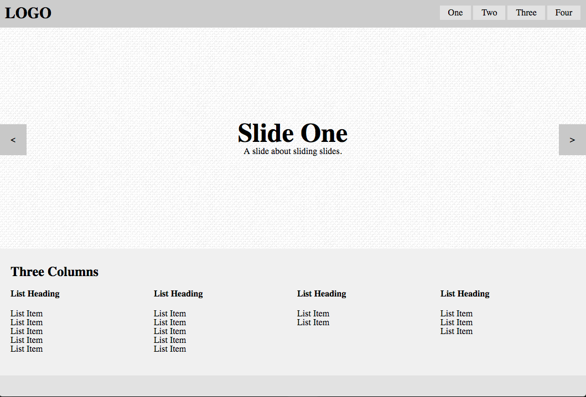
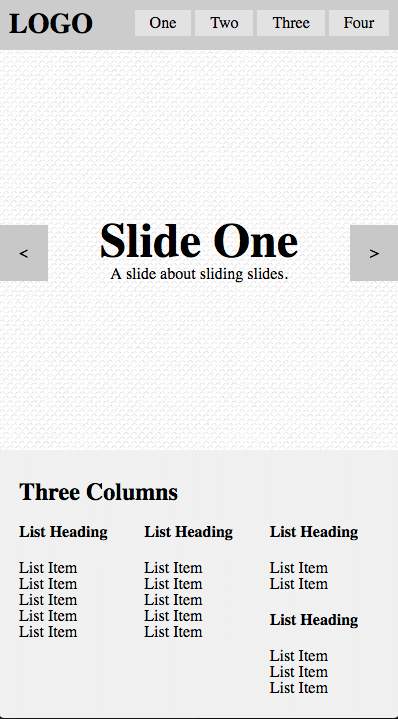

BORN FED Interview Exercise
Hello! You've made it to the development test portion of your interview with BORN Group. Congratulations!
In this portion of your interview, we've prepared some unstyled HTML structure and we'd like you to turn it into a (very simple) interactive interface. This exercise should take you around 1 hour to complete. Please keep track of how long it takes you! The test includes a few basic rules/guidelines:
- Please write the JavaScript for a basic HTML5 content slider (or carousel). The HTML structure has been provided for you and is already mostly responsive. Please make sure your JavaScript takes into account there may be more than 3 items in the carousel/slider.
- Please also add to the provided Stylesheet so that the following things occur:
- The text in each slider is vertically and horizontally centered.
- The content in the "three columns" section should be separated into 4 columns for desktop and 3 columns for mobile ( <=767px ). There's no need to handle for tablet unless you would like to. Please note, no responsive framework is required to do this, but you can use one if you'd like.
- The background colors in your version match the screenshot provided
- Things to note/hints:
- Your exercise only needs to take into account the Chrome (50+) browser, but you should make your code as browser-compatible as possible.
- jQuery is included, but should only be used for DOM selection, not animation
- There is a background image applied to each slide in the carousel ;)
- "-webkit-column-count"
- "-webkit-column-break-inside"
- Do your best to construct an Object-oriented javascript file to control the carousel/slider
- Don't worry if your font sizes don't match exactly, but the idea here is to get as close as you can to the examples
- Bonus points if you map the left/right action to keyboard keys
You shouldn't need to change the DOM in index.html at all to complete the exercise, but you can if you must.
Please use the video and screenshots below as guidelines leading you to the intended result.

